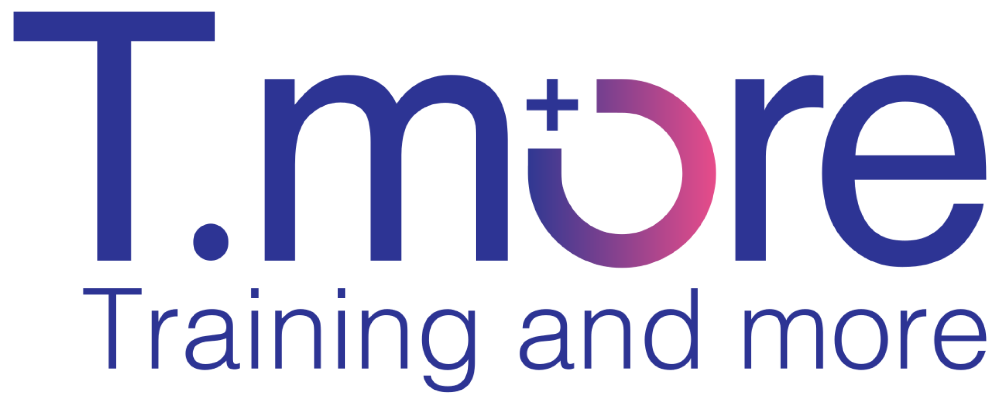

סינון לפי מקצועיות הפרילנסר והתאמה לצורך המקצועי של הפרויקט — במקום קורות חיים שמגיעים במייל או בהודעה.
| # | שם | מקצוע | התאמה | קצת על עצמי | מסמכים |
|---|---|---|---|---|---|
| 128 | יעל אדרי | ייעוץ טכנו פדגוגי | 96% | 10 שנות פיתוח למידה ארגונית, התמחות בפלטפורמות LMS והנחיית מנחים. | CV · 2 תעודות |
| 119 | עמית כהן | מפתחי למידה מאקרו | 91% | בניית מסלולי למידה מקצה לקצה לחברות הייטק והכשרות פנימיות. | CV · תעודה |
| 104 | נועה שמש | הנחיית סדנאות | 84% | הנחיית סדנאות מנהיגות ותקשורת — יום שלם / גמיש לפי צורך. | CV · 3 תעודות |
| 97 | דניאל לוי | עיצוב גרפי | 72% | עיצוב ממשקי למידה, מצגות ומיתוג לקורסים דיגיטליים. | CV · פורטפוליו |